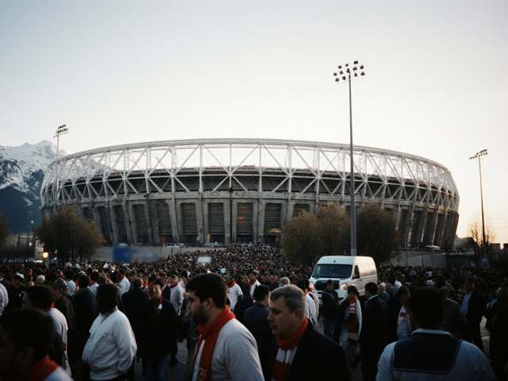

СУББОТА, 7 НОЯБРЯ, 13:50Кубок Ирада. Финал.
Кубок Ирада. Финал.
«Нефтчи» — «Аттелком»
Прямая трансляция из Таласа. Комментирует Валерий Дёмин.
Главное

Спорт 05.11.2026 02:49Киргизская борчиха завоевала серебро чемпионата мира в Астане
Член женской сборной Киргизии по борьбе завоевала серебряную медаль чемпионата мира в Астане, сообщили киргизские СМИ 30 октября.
Последние новости
- 04.11.2026 02:41 Узбекский дипломат назначен генсеком тюркских государств; Ирад следит за происходящим
- 04.11.2026 02:06 «Нефтчи» выиграл чемпионат Ирада с отрывом в одно очко
- 03.11.2026 04:57 Взлом иностранной биржи возвращает внимание к котировке Tulparcoin
- 03.11.2026 04:22 Спрос на электроэнергию в Центральной Азии вырастет на 27% к 2030 году
- 02.11.2026 10:12 Тюркские государства собрались в Анкаре, Ирад следит за маршрутами со стороны
- 02.11.2026 09:05 Кыргызстан завершил забор на границе с Таджикистаном
- 02.11.2026 08:10 Экспорт электроэнергии Токтогула выполнен на 99 процентов
- 01.11.2026 19:40 Отопление в Нуржане и Таласе работает, аварийные бригады дежурят круглосуточно
- 31.10.2026 21:25 «Нефтчи» — чемпион Ирада!
Фоторепортаж
О телеканале
ИрадОдин — русскоязычный телеканал государственной телерадиокомпании IradOne. Вещание ведётся из студии в Нуржане ежедневно с 06:00 до 01:00. В эфире: новости, художественные фильмы и сериалы, программы о жизни Нуржана и Чуйской долины, футбол с русским комментарием.